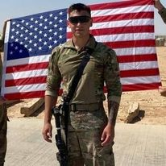

Hello all, my name is Paul Blanco. I am originally from riverton wyoming where I spent most of my youth. I am married with Two children, Keaton and Myra. I also have two dogs one is and Australian Shepard and the other is and Aussie-Doodle. I am currently in the US military My Military Ocupational Speciality is 14P20 also known as Air and Missile defense teamleader.During my time in service I Deployed to Iraq working on the LPWS weapon system where we provided security.
In my formative years, I undertook various employment opportunities, beginning with a local paper route in the serene town of Riverton, Wyoming. The role entailed walking across the town to deliver newspapers promptly while ensuring the product remained in pristine condition. Subsequently, I transitioned to a cashier position at Walmart, where my service and work ethics earned me the promotion to the position of Customer Service Manager within a year. Following my departure from Walmart, I took up a post as a Corrections Officer at the Wyoming State Prison, an experience that led me to my current role as an Air and Missile Defense Team Leader. My tenure in this position introduced me to fundamental coding skills, which were pivotal in keeping one of our weapon systems operational and, subsequently, sparked my pursuit of an education in computer science.
Riverton High school 2014-2017
Wyoming DOC Police academy 2017-2018
Army Schools BCT, AIT Jan 2019- July 2019
AMU 2021- Present